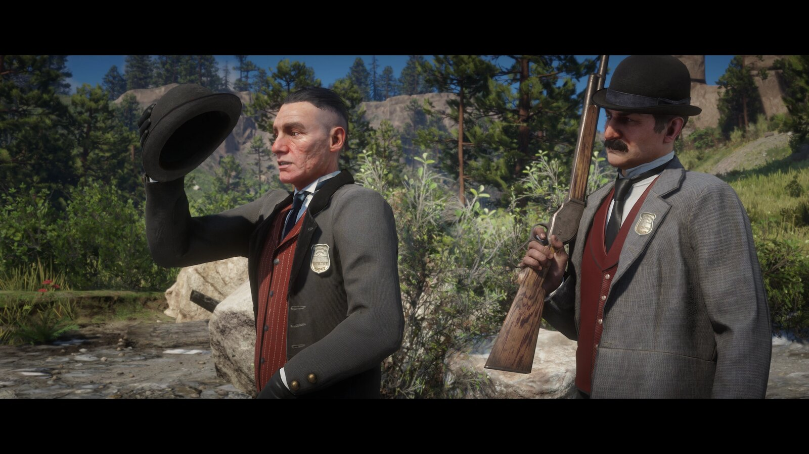

Personnage · Red Dead Redemption
Edgar Ross
Edgar Ross est un homme de loi américain et l'antagoniste principal de Red Dead Redemption (2010), dont l'action se déroule en 1911 et 1914. Il apparaît aussi dans Red Dead Redemption 2 (2018), qui se passe en 1899 et 1907. En 1899, il est agent de la Pinkerton sous les ordres d'Andrew Milton, à la poursuite du gang Van der Linde ; en 1907, il dirige le tout nouveau Bureau of Investigation. En 1911, il retient Abigail et Jack Marston pour contraindre John Marston à traquer ses anciens compagnons, puis mène l'assaut sur le ranch au cours duquel John est tué. En 1914, à la retraite, il meurt en duel face à Jack.
Jim Bentley l'interprète dans les deux jeux.
- Naissance
- Vers 1861 (Red Dead Wiki, d'après le guide de l'édition Game of the Year de Red Dead Redemption)
- Mort
- 1914, sur la rive du San Luis, au Nuevo Paraíso, tué en duel par Jack Marston dans "Remember My Family"
- Statut
- Décédé
- Nationalité
- Américaine
- Famille
- Emily Ross (épouse), Phillip Ross (frère)
- Affiliation
- Pinkerton National Detective Agency (1899) ; National Bureau of Criminal Identification ; Bureau of Investigation (à sa tête à partir de 1907, retraité vers 1913)
- Rôle
- Agent de la Pinkerton sous les ordres d'Andrew Milton (1899) ; agent fédéral en poste à Blackwater (1907 à 1913)
- Jeux
- Red Dead Redemption (aussi personnage jouable en multijoueur avec le pack Liars and Cheats, 2010), Red Dead Redemption 2
- Voix
- Jim Bentley (dans les deux jeux)
Biographie
Origines
Les jeux ne montrent rien d'Edgar Ross avant 1899. Le guide de l'édition Game of the Year de Red Dead Redemption lui donne 50 ans en 1911, et le Red Dead Wiki s'appuie sur ce chiffre pour situer sa naissance en 1861. Selon le même wiki, deux diplômes sont accrochés dans son bureau de Blackwater en 1911 : l'un de la Park University, l'autre d'une école de droit baptisée Logola Law School. Un article de presse paru en 1907 retrace le début de sa carrière. On y lit que Ross a longtemps été agent principal de la Pinkerton Detective Agency, où Andrew Milton lui servait de mentor. En 1899, les deux hommes travaillent ensemble : Milton est l'agent le plus gradé, Ross le seconde.
Red Dead Redemption 2 (1899)
Ross n'apparaît pas dans le premier chapitre, qui se déroule dans la neige autour de Colter. On ne le voit pas non plus au chapitre 5, pendant que le gang est bloqué à Guarma.
Chapitre 2 : Horseshoe Overlook
Ross fait sa première apparition dans "A Fisher of Men". À la demande d'Abigail, Arthur Morgan a emmené Jack Marston, alors âgé d'environ quatre ans, pêcher dans la rivière en contrebas du camp de Horseshoe Overlook. Deux cavaliers arrivent et mettent pied à terre : Milton et Ross. Milton les présente tous deux comme des agents de la Pinkerton Detective Agency détachés auprès du gouvernement des États-Unis. Il annonce qu'une prime de 5 000 dollars pèse sur la tête d'Arthur et qu'un homme correspondant au signalement de Dutch a dévalisé un train appartenant à Leviticus Cornwall près de Granite Pass. Il promet à Arthur qu'il ne sera pas pendu s'il livre Dutch van der Linde. Arthur refuse.
Milton raconte ensuite comment il a achevé Mac Callander, un membre du gang blessé à Blackwater. Arthur jette sa canne à pêche par terre. Ross le met en joue avec son fusil, et Jack se cache derrière Arthur. Ross ne dit rien de toute la scène jusqu'à ce que Milton tourne les talons. En partant à son tour, il lance à Jack de bien profiter de sa pêche tant qu'il le peut encore. Arthur porte la main à son pistolet, regarde l'enfant et renonce. De retour au camp, Arthur rapporte la rencontre à Dutch. Il se souvient du nom de Milton, mais doit chercher le second avant de retrouver celui de Ross. Dutch décide de ne rien faire pour l'instant.
Chapitre 3 : Clemens Point
"The Battle of Shady Belle" s'ouvre à Clemens Point, au lendemain de l'attaque du gang contre Braithwaite Manor, où il était venu chercher Jack, enlevé. Dutch, Hosea Matthews, Arthur et John Marston discutent autour d'une table quand Lenny Summers prévient Dutch qu'il y a un problème. Milton et Ross entrent dans le camp. Milton se présente, présente son collègue ("Agent Ross") et salue Arthur comme une vieille connaissance. Il propose au reste du gang trois jours pour disparaître si Dutch le suit. Dutch fait mine d'accepter, le gang arme ses fusils, et Susan Grimshaw fait remarquer à Dutch que son nouvel ami ferait mieux de partir.
Milton prévient qu'il reviendra avec cinquante hommes et que tout le camp mourra. Lenny l'empoigne pour le raccompagner, et Milton se dégage. Les deux agents s'éloignent. Ross ne prononce pas un mot de toute la scène. Dutch charge Lenny de les suivre pour s'assurer qu'ils s'en vont, et le gang s'installe à Shady Belle, une ancienne maison de plantation du bayou, près de Saint-Denis, qu'Arthur et John doivent d'abord reprendre aux Lemoyne Raiders.
Chapitre 4 : Saint-Denis
Dans "Banking, The Old American Art", le gang braque la Lemoyne National Bank de Saint-Denis. Les Pinkerton encerclent le bâtiment, et Milton, qui a capturé Hosea pendant la diversion, l'exécute en pleine rue. La page de la mission ne nomme que Milton. D'après la page du Red Dead Wiki consacrée à Ross, celui-ci se tient aux côtés de Milton devant la banque au moment de l'exécution.
Chapitre 6 : Beaver Hollow
Dans "Just a Social Call", Arthur, Dutch et Micah Bell se cachent sur le port d'Annesburg pour attendre Leviticus Cornwall. Cornwall descend de son yacht en compagnie de Milton et de Ross. Il se plaint que les deux agents n'aient rien obtenu pour son argent et menace de ne plus les payer. Selon le Red Dead Wiki, Milton se tourne ensuite vers Ross et lui dit qu'une tâche les attend. Dutch interpelle Cornwall et l'abat, puis Arthur, Dutch et Micah se fraient un chemin hors de la ville sous le feu des gardes de Cornwall et des Pinkerton.
Au début de "Red Dead Redemption", Tilly Jackson croise le gang sur la route et annonce que les hommes de Milton se sont emparés d'Abigail Marston et l'ont emmenée à Van Horn. Arthur et Sadie Adler partent à sa recherche, et Arthur annonce ensuite au gang qu'Abigail a abattu Milton. De retour à Beaver Hollow, la confrontation entre Arthur et Micah tourne court : Javier Escuella signale l'arrivée des Pinkerton, Micah tire sur Susan, et les agents ouvrent le feu sur le camp. C'est désormais Ross qui les commande. On entend sa voix par-dessus la fusillade : il se présente comme l'agent Ross de la Pinkerton Detective Agency, déclare le gang cerné et lui ordonne de déposer les armes.
Quand Dutch, Micah et les autres s'enfuient dans les bois, Ross ordonne à un certain Jennings de les contourner avec ses hommes pour leur couper la route, et lance ses agents à la poursuite de Van der Linde. Il repère ensuite Arthur et John près d'une grotte, les désigne nommément à ses hommes et promet de cesser le feu s'ils jettent leurs armes et lèvent les mains. Les deux hommes s'engouffrent au contraire dans la grotte. Ross envoie ses agents à leurs trousses : "They have no way out of there. Find them and kill them." (ils n'ont aucune issue, trouvez-les et tuez-les). Puis il interpelle les deux fuyards : "Mr. Morgan, Mr. Marston. You are trapped. Surrender and we will take you alive." (monsieur Morgan, monsieur Marston, vous êtes pris au piège ; rendez-vous et nous vous prendrons vivants). Il finit par exiger qu'on les sorte de là, morts ou vifs. Arthur et John grimpent à une échelle et s'échappent. Selon le Red Dead Wiki, on entend Ross pendant toute cette séquence sans jamais le voir.
Entre 1899 et 1907
Les jeux ne montrent pas Ross entre 1899 et 1907. L'article de presse de 1907 éclaire cette période. Il évoque "the late Andrew Milton" ("feu Andrew Milton") et indique qu'après ses années chez Pinkerton, Ross est passé au National Bureau of Criminal Identification. L'article présente cet organisme comme une structure fondée en 1896 par la National Chiefs of Police Union pour tenir des fichiers sur les criminels et les gangs et travailler avec la police.
Red Dead Redemption 2 : l'épilogue (1907)
L'épilogue se déroule en 1907 ; une lettre du maire de Saint-Denis reçue à ce moment-là est datée de juin 1907. Des journaux de la période de l'épilogue (le Blackwater Ledger n° 74, la New Hanover Gazette n° 39 et le Saint Denis Times n° 55) publient un article intitulé "Bureau of Investigation Founded". On y apprend que l'Attorney General, le ministre de la Justice, a créé une agence d'enquête autonome dirigée par Ross, chargée de traquer les criminels dangereux et en vue et d'enquêter sur la fraude financière et le crime organisé. D'anciens membres du Secret Service rejoignent ses effectifs. L'article présente Ross comme "one of the most humble, innovative and honest law enforcement officers of his class" (l'un des policiers les plus humbles, les plus inventifs et les plus honnêtes de sa génération) et rapporte que, selon ses collègues, il "produces results where others fail" (obtient des résultats là où d'autres échouent). Lors de sa prestation de serment, Ross promet que tout criminel finira par payer en Amérique (la déclaration complète figure dans les citations).
Épilogue II : Beecher's Hope
Dans "American Venom", John, Sadie et Charles Smith retrouvent Micah dans sa planque du mont Hagen, où Dutch lui tire dessus avant que John ne l'achève. Ross réapparaît dans le générique de fin qui suit, désormais accompagné d'un agent plus jeune, Archer Fordham. À la planque, ils trouvent Micah étendu face contre terre à côté de la cabane. Fordham entre la fouiller ; Ross s'agenouille près du corps, le soulève et le repose. Fordham ressort en haussant les épaules, et ils s'en vont.
D'autres scènes du générique suivent l'enquête. Au Smithfield's Saloon de Valentine, le barman oriente Ross et Fordham vers deux clients : une femme et le commissaire-priseur Morris Peyton. Aux abords de Rhodes, les agents arrêtent une diligence pour parler au cocher ; d'après une légende du Red Dead Wiki, Ross tend sa carte à l'un des passagers. La dernière scène du générique se passe à Beecher's Hope, où John et Jack pansent un cheval dans le corral. De loin, Ross et Fordham les observent aux jumelles, échangent un signe de tête et repartent. Red Dead Redemption s'ouvre quatre ans plus tard sur un John contraint de travailler pour Ross.
Red Dead Redemption (1911)
Red Dead Redemption commence en octobre 1911, une date déduite des numéros du journal du jeu. Ross est alors en poste à Blackwater, où son bureau occupe l'étage du poste de police. Un article de presse de 1914 indique qu'il y a passé sept ans, avec une compétence fédérale sur tout le West Elizabeth. Avant le début du jeu, des agents du Bureau menés par Ross ont emmené Abigail et Jack loin de Beecher's Hope. Le Bureau les retient pour obliger John à traquer ses anciens compagnons du gang Van der Linde. En échange, Ross promet à John sa liberté.
Acte I : New Austin
Au début d'"Exodus in America", John descend du ferry Morningstar à Blackwater. Ross et Fordham l'escortent à travers la ville jusqu'à la gare et le font monter dans un train pour Armadillo, dans le New Austin. Sa première cible est Bill Williamson, dont la bande tient Fort Mercer. Ross ne réapparaît plus de tout l'acte, que John passe à se remettre d'une blessure par balle et à chercher de l'aide pour prendre le fort.
Acte II : Nuevo Paraíso
Bill s'enfuit au Mexique, et John le suit au Nuevo Paraíso. À la fin de "The Gates of El Presidio", John capture ou tue Javier Escuella, selon le choix du joueur. Il retrouve ensuite Ross et Fordham près du pont de la frontière, où ils l'attendent avec une automobile. Ross l'accueille en se disant agréablement surpris de le voir là. Fordham rappelle à John ses obligations envers le gouvernement : retrouver Williamson, puis rentrer à Blackwater, où Dutch se cacherait. Si Javier est mort, Fordham le reproche à John. Avant de repartir avec Javier, mort ou vif, Ross glisse à John que sa femme lui transmet ses amitiés.
Acte III : West Elizabeth
Après la mort de Bill près d'Escalera, John se présente au poste de police de Blackwater dans "Bear One Another's Burdens". Il réclame sa femme et son fils, estime le marché rempli et accuse les agents de se jouer de lui. Ross énumère les jeux auxquels ils pourraient jouer à la place : le pendre pour meurtre, saisir sa ferme ou l'envoyer sur la chaise électrique. Il rappelle ensuite que l'accord porte sur tous les hommes de son ancien gang, et qu'ils n'ont toujours pas Dutch mais savent désormais où il se trouve. Il veut que John tue Dutch lui-même, car il ne tient pas à faire des martyrs. Au moment de sortir, Ross enfonce le canon d'un pistolet dans la poitrine de John, puis le lui tend : John reçoit un High Power Pistol.
Au rez-de-chaussée, John demande à Ross de relâcher Nigel West Dickens, qu'on amène en état d'arrestation, et Ross ordonne à l'agent de le laisser partir. En automobile, sur la route de l'épave du Serendipity, Ross récite le dossier de John, lui attribue au moins quarante braquages de banque et lui assure qu'il pourra retourner à sa ferme une fois Dutch retrouvé. Quand John demande où tout cela s'arrêtera, Ross répond qu'on ne tourne pas le dos à une telle vie et que le gouvernement lui offre une chance de rédemption. Il énumère les automobiles, le cinéma et bientôt les aéroplanes, et fait remarquer qu'il serait dommage que la femme de John découvre tout cela en veuve.
Ross reste près de la voiture, sur la falaise qui domine l'épave, pendant que John et Fordham descendent à pied. Ils ne trouvent aucune trace de Dutch, seulement l'informateur du Bureau, Nastas, roué de coups et ligoté. John le porte jusqu'à la voiture. Sur le chemin du retour, le moteur cale, et Ross repousse les cavaliers de Dutch aux côtés de John pendant que Fordham répare. Sur le chemin du retour, Ross refuse encore à John de voir sa famille, en assurant qu'elle profite de vacances bien méritées. À Blackwater, il fait conduire Nastas chez Harold MacDougal, un anthropologue renvoyé de Yale qui conseille les agents sur les Amérindiens, et demande à John de l'aider. Dans "At Home with Dutch", MacDougal confie à John que Ross lui a parlé de son passé avec Dutch.
Dans "Great Men are Not Always Wise", un informateur prévient Ross que Dutch s'apprête à rendre visite au directeur de la banque de Blackwater. Ross et Fordham emmènent John sur un toit face à la banque. Ross leur ordonne de ne pas tirer avant son signal, puis envoie John à l'intérieur avec deux hommes de loi, Dell Hopkins et Benton Manning. Dutch tue une otage, l'employée de banque Muriel Scranton, et s'enfuit en automobile avec le directeur. L'homme de loi Hopkins rend John responsable de la fuite. Ross mène la poursuite vers un ancien camp de bûcherons ; en chemin, il répond aux questions de John sur le rôle des agents (voir Méthodes du Bureau). Ils trouvent la voiture de Dutch en flammes au bord de la route. Ross demande à John s'il a eu peur de tirer sur Dutch, et John promet de l'abattre à la prochaine occasion (la réponse de Ross est citée dans la personnalité).
Dans "And You Will Know The Truth", Ross déclare à John qu'il a échoué et rejette une fois de plus sa demande. Il expose sa conception de la civilisation et reconnaît que ses méthodes comportent des contradictions. Il demande ensuite à John de l'aider à en finir avec Dutch ; quand John demande s'il a le choix, Ross répond que non. L'armée a installé un camp à l'extérieur de Blackwater pour servir d'appât, en faisant courir le bruit qu'il abrite des vivres et des munitions. Ross, Fordham et John s'y rendent en camion blindé, John aux commandes de sa mitrailleuse. La bande de Dutch attaque et se fait repousser. Pendant la poursuite qui suit, une explosion renverse le camion.
"And The Truth Will Set You Free" enchaîne aussitôt. Quand John demande ce qui se passera s'il refuse, Ross lui rappelle que la dernière personne capable de faire entendre raison à Dutch, c'est sa femme. Il chevauche avec John, Fordham et un détachement de cavalerie commandé par un capitaine jusqu'au fort de Dutch, à Cochinay, dans les montagnes. En chemin, il affirme que le gouverneur Nate Johns sera ravi, lui qui a tout intérêt à faire le ménage dans la région. Les soldats font sauter la porte extérieure ; le capitaine accompagne John jusqu'à la porte intérieure, puis John poursuit seul. Acculé au bord d'une falaise, Dutch jette son arme et se laisse tomber. Ross rejoint John près du corps, lui demande s'il a manqué de cran pour tirer, emprunte son arme et tire sur le cadavre, parce que le rapport aura meilleure allure ainsi.
John demande où se trouve sa famille. Ross commence par lui annoncer que sa femme a été tuée dans une émeute de prison la semaine précédente. Quand John le met en joue, Ross dit qu'il plaisantait : Abigail et Jack ont été renvoyés au ranch de Beecher's Hope, sains et saufs. Fordham remercie John pour son aide, et Ross prend congé. John rentre chez lui.
Quelque temps après le retour de John, dans "The Last Enemy That Shall Be Destroyed", Uncle repère à la longue-vue des soldats et des hommes de loi qui avancent vers le ranch. John et Uncle repoussent les premières vagues ; Uncle, touché, meurt sur le perron. Dans la grange, John fait monter Abigail et Jack sur un cheval et les fait partir. Il ouvre les portes face à un peloton d'exécution commandé par Ross, dégaine, en abat plusieurs et tombe sous les balles. Ross range son pistolet et fume un cigare pendant que John agonise. Il fait ensuite signe aux hommes, et tous repartent. Selon le Red Dead Wiki, Fordham fait partie des hommes qui attendent John devant la grange, même s'il n'apparaît pas dans la cinématique qui suit.
Red Dead Redemption : l'épilogue de 1914
Le récit fait un bond de trois ans ; le Red Dead Wiki situe cette période en novembre 1914, d'après un article sur la guerre entre la Grande-Bretagne et l'Empire ottoman. Un article du Blackwater Ledger n° 213, "Edgar Ross Retires After a Lifetime of Government Service", annonce son départ à la retraite. Il lui attribue la fin de l'agitation amérindienne dans la région et l'élimination de Bill Williamson, Dutch van der Linde, Javier Escuella et John Marston. Il cite trois décorations : pour services exceptionnels rendus au pays, pour l'ensemble d'une carrière distinguée et pour bravoure exceptionnelle dans l'exercice de ses fonctions. Ross et sa femme, Emily, se sont installés dans une cabane au bord du lac Don Julio, à Cholla Springs, dans le New Austin.
Dans "Remember My Family", Jack, âgé d'environ dix-neuf ans et désormais personnage du joueur, demande à un agent du Bureau, Howard Sawicki, à la gare de Blackwater, s'il a travaillé avec Edgar Ross. Sawicki ne le connaissait que de réputation. Il raconte que Ross, couvert de médailles, a pris sa retraite environ un an plus tôt et s'est installé avec sa femme dans une cabane au bord du lac Don Julio. Jack s'y rend et annonce à Emily Ross qu'il apporte une lettre pour son mari. Elle se plaint du Bureau (voir les relations) et indique qu'Edgar est parti chasser avec son frère, Phillip, sur la rive sud de la San Luis River.
Jack passe au Nuevo Paraíso et trouve Phillip à son campement de chasse, près de Rio del Toro. Phillip l'envoie en aval, là où son frère chasse le canard. Jack trouve Ross sur la berge, en train de tirer sur des canards au fusil de chasse. Il se présente comme le fils de John Marston. Ross rit et dit qu'il se souvient de son père. Quand Jack l'accuse d'avoir tué John, Ross répond que c'est la vie qu'il menait qui l'a tué. Jack insiste : il a tout vu, Ross a abattu son père comme un chien. Ross menace de l'abattre de la même façon et lui ordonne de partir. Jack refuse.
Ross lâche son fusil de chasse, et les deux hommes s'affrontent en duel au pistolet. Jack tire le premier et tue Ross. La mort de Ross clôt l'histoire principale de Red Dead Redemption, et le générique défile. Dans la chronologie, c'est le dernier événement de la saga Redemption.
Personnalité
Le Red Dead Wiki cite la description de Ross imprimée dans le guide de l'édition Game of the Year de Red Dead Redemption. Elle le présente comme le chef d'une jeune agence gouvernementale, "a man whose faded physical prowess has been supplanted by his mental acuteness" (un homme dont la vivacité d'esprit a pris le relais d'une vigueur physique déclinante), et comme "a cynic who sees the worst in everyone, and who loves the power that the government has recently granted him" (un cynique qui voit le pire en chacun et qui adore le pouvoir que l'État vient de lui confier). Le texte se termine ainsi : "He sees himself as an individual who is completely above any law." (il se considère comme un homme placé au-dessus de toutes les lois).
Dans les missions de 1911, il traite John d'idiot "devoid of intellect" (dépourvu d'intelligence), et répond à la colère de John par des plaisanteries, dont l'une sur la mort d'Abigail (voir la biographie).
Dans ses propres mots
Dans "And You Will Know The Truth", il expose son rôle à John : "You see we, me and Archer, we're the bad guys. We enforce the rules. Now, while the rules may not be perfect, they're really not so bad." (vous voyez, nous, Archer et moi, nous sommes les méchants ; nous faisons respecter les règles ; elles ne sont peut-être pas parfaites, mais elles ne sont vraiment pas si mauvaises). Puis : "It's about one man and his gun versus another man. Sure, civilization may be dull, but the alternative, Mr. Marston, is hell." (c'est un homme et son arme contre un autre homme ; la civilisation est peut-être ennuyeuse, mais l'autre choix, monsieur Marston, c'est l'enfer). Quand John objecte que cette civilisation passe par l'enlèvement de la femme et du fils d'un homme, Ross admet : "Well, I know there's contradictions. I'm not going to lie to you." (je sais bien qu'il y a des contradictions, je ne vais pas vous mentir). À quoi rimait ce discours, demande John ; Ross répond : "I don't rightly know, but it sure felt good saying it." (je n'en sais trop rien, mais ça fait du bien de le dire).
En route vers l'épave du Serendipity, dans "Bear One Another's Burdens" : "A new dawn is breaking, Mr. Marston. This is the age of the machine." (une ère nouvelle se lève, monsieur Marston ; c'est l'âge de la machine). En quittant Blackwater, dans "Great Men are Not Always Wise" : "Civilization is coming to the West, and we will clear out the dead wood." (la civilisation arrive dans l'Ouest, et nous allons couper le bois mort). À la fin de la même mission, après la fuite de Dutch : "You know, at the end of this, you'll probably get a medal. I know I shall." (au bout du compte, vous aurez sans doute une médaille ; moi, j'en aurai une, c'est certain).
Noms
Milton le présente comme l'agent Ross en 1899, et c'est sous ce titre qu'il somme la bande de se rendre à Beaver Hollow. À Blackwater, John demande M. Ross au poste de police et Fordham parle de lui en l'appelant M. Ross ; en 1914, sa femme l'appelle Edgar et l'agent du Bureau Howard Sawicki parle d'Edgar Ross. Il appelle John monsieur Marston, et parfois "old boy" ou "dear boy" (mon vieux, mon cher). Le Red Dead Wiki retient Agent Ross comme surnom.
Apparence
D'après le Red Dead Wiki, il a en 1899 les cheveux châtain foncé coupés court, une épaisse moustache et un chapeau melon avec son costume de Pinkerton. En 1907, ses cheveux, désormais séparés par une raie au milieu, commencent à grisonner, et il ne porte plus de melon. En 1911, il a les cheveux et la moustache gris et le front plus haut ; il porte un costume trois pièces beige, une cravate rouge et un melon noir. En 1914, à la retraite, il chasse en chemise et bretelles sous un chapeau à larges bords.
Relations

John Marston
Ross voit John pour la première fois à Clemens Point en 1899, où John donne à Milton un faux nom, Rip Van Winkle ; à Beaver Hollow, il le nomme avec Arthur parmi les hommes acculés près des grottes. En 1907, son enquête sur la mort de Micah s'achève sur John, qu'il observe à son ranch. En 1911, il retient la femme et le fils de John pour l'obliger à traquer Bill, Javier et Dutch, et refuse chaque fois que John réclame sa famille (voir la biographie). Il lui assure n'avoir à cœur que son intérêt.
John répond à Ross par une hostilité ouverte. Il le traite de lâche, lui dit qu'il le tuerait cent fois avant de tuer Dutch s'il en avait le choix, et le compare à Dutch, un homme violent qui s'est pris pour Dieu. Ross le traite en retour d'assassin. Après la mort de Dutch, il laisse John rentrer chez lui, puis mène l'assaut sur Beecher's Hope au cours duquel John est abattu (voir la biographie).

Jack Marston
En 1899, les seuls mots de Ross à Jack sont sa réplique en partant, au bord de la rivière, dans "A Fisher of Men" (voir la biographie). En 1911, le Bureau retient Jack avec sa mère. En 1914, Jack remonte jusqu'à Ross par Howard Sawicki, Emily et Phillip Ross, et le tue en duel (voir la biographie). Quand Jack insiste sur le fait qu'il l'a vu tuer John, Ross se contente de répondre : "You keep saying that." (tu n'arrêtes pas de le dire).

Abigail Marston
En 1911, le Bureau retient Abigail avec Jack. Ross se sert d'elle à deux reprises pour faire pression sur John : en route vers le Serendipity, il évoque le risque qu'elle devienne veuve, puis, après le renversement du camion, quand John demande ce qui se passera s'il refuse, il la désigne comme la dernière personne capable de raisonner Dutch (voir la biographie). Il plaisante aussi sur sa mort et dit à John qu'elle lui transmet ses amitiés (voir les citations).

Archer Fordham
Fordham est le collègue de Ross au Bureau de 1907 à 1911 : ils examinent ensemble le corps de Micah, escortent John dans Blackwater et récupèrent Javier à la frontière. Ross le rabroue souvent. Quand Fordham cite une de ses prétendues maximes, Ross répond : "I can't imagine I ever said anything quite so trite." (je n'imagine pas avoir jamais dit une chose aussi banale). Il lui lance "Don't get snarky with me, Fordham." (pas d'insolence, Fordham) et, après la panne de l'automobile, s'en prend à sa conduite : "A bad workman shouldn't blame his tools." (un mauvais ouvrier ne devrait pas accuser ses outils).

Andrew Milton
Ross est l'adjoint de Milton en 1899 ; l'article de 1907 sur la création du Bureau précise qu'il a longtemps été agent principal de la Pinkerton sous la tutelle de Milton. C'est Milton qui parle quand les deux agents abordent Arthur au bord de la rivière et quand ils entrent dans le camp de Clemens Point. Ils descendent ensemble du yacht de Cornwall à Annesburg. Après la mort de Milton, tué par Abigail à Van Horn, c'est Ross que l'on entend mener les Pinkerton à Beaver Hollow.

Dutch van der Linde
Ross se tient aux côtés de Milton quand les agents proposent un marché à la bande de Dutch à Clemens Point, en 1899. En 1911, il veut que ce soit John qui tue Dutch (voir la biographie). Pendant la poursuite qui suit l'embuscade de la banque de Blackwater, il se moque de Dutch devant John : "So, that's the great Dutch? What a role model. The man who made who you are." (alors c'est ça, le grand Dutch ? Quel modèle. L'homme qui a fait de vous ce que vous êtes). Dans "And You Will Know The Truth", il compare Dutch aux écrivains naturalistes de l'Est (voir les citations). À Cochinay, il tire dans le corps de Dutch (voir la biographie).

Micah Bell
Dans "Just a Social Call", Micah observe avec Arthur et Dutch, depuis le port d'Annesburg, Ross et Milton descendre du yacht de Cornwall. À Beaver Hollow, Ross annonce que les Pinkerton encerclent le camp juste avant que Micah ne presse Dutch de fuir. En 1907, Ross et Fordham trouvent le corps de Micah à sa planque du mont Hagen, et leur enquête les mène jusqu'à John.

Arthur Morgan
Ross se trouve deux fois face à Arthur en 1899, au bord de la rivière dans "A Fisher of Men" puis à Clemens Point, sans lui adresser la parole ni l'une ni l'autre fois. À Beaver Hollow, il somme Arthur et John de se rendre en les appelant par leur nom (voir la biographie).

Uncle
En 1911, Uncle garde Beecher's Hope pendant que le Bureau de Ross retient Abigail et Jack. C'est lui qui repère le premier les soldats et les hommes de loi qui marchent sur le ranch, et il meurt sur le perron pendant l'assaut (voir la biographie). En 1914, Jack se recueille sur les tombes de John, d'Abigail et d'Uncle avant de partir sur les traces de Ross.

Bill Williamson
Bill est la première cible que Ross assigne à John, à Fort Mercer. Même une fois Bill et Javier réglés, Ross ne rend pas sa famille à John (voir la biographie).

Javier Escuella
Après El Presidio, John remet Javier, vivant ou mort, à Ross et Fordham près du pont de la frontière (voir la biographie). Dans les deux versions de la scène, Ross ne s'adresse qu'à John ; c'est Fordham qui ordonne à Javier, s'il est vivant, de monter dans l'automobile.

Hosea Matthews
Hosea est attablé avec Dutch, Arthur et John quand Ross et Milton entrent dans le camp de Clemens Point, en 1899. La présence de Ross lors de son exécution à Saint-Denis, rapportée par le Red Dead Wiki, est traitée dans la biographie.

Leviticus Cornwall
Cornwall finance les Pinkerton qui traquent la bande en 1899. Ross descend de son yacht avec lui et Milton à Annesburg, peu avant que Dutch ne l'abatte (voir la biographie).

Nastas
Nastas est l'informateur du Bureau sur la nouvelle bande de Dutch. Quand John et Fordham le ramènent blessé du Serendipity, Ross demande : "And who is this savage? A prisoner?" (et qui est ce sauvage ? un prisonnier ?). Quand on lui répond que c'est l'informateur, il lui demande : "Do you speak English?" (vous parlez anglais ?). Ross le fait ensuite conduire chez MacDougal, en expliquant : "I just can't communicate with them." (je n'arrive tout simplement pas à communiquer avec eux).
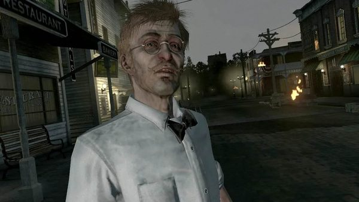
Harold MacDougal
Ross compte sur le professeur pour traiter avec les Amérindiens de la région. Quand Fordham explique que MacDougal a été renvoyé de Yale, Ross commente : "Which should tell you something." (ce qui en dit long). Il le présente ensuite à John : "Professor MacDougal has been a good friend to the U.S. government, Mr. Marston. Just like you." (le professeur MacDougal est un bon ami du gouvernement américain, monsieur Marston ; tout comme vous). Plus tard, c'est par MacDougal que Ross apprend que John est monté jusqu'à Cochinay.

Nigel West Dickens
Ross n'a affaire à West Dickens qu'une seule fois, au poste de police de Blackwater (voir la biographie). Quand John se porte garant de ce vieil escroc inoffensif qui l'a aidé à avoir Williamson, Ross lance au policier : "Did you hear that, officer, the man's a hero. Let him go." (vous avez entendu, agent, cet homme est un héros ; relâchez-le).
Emily Ross
Emily est la femme de Ross ; en 1914, le couple vit dans une cabane au bord du lac Don Julio (voir la biographie). Quand Jack annonce une lettre pour son mari, elle se plaint que le Bureau "just won't get its talons out of him" (ne veut pas desserrer ses griffes) alors qu'il est à la retraite, et dit d'Edgar qu'il est "such a sensitive man" (un homme si sensible).
Phillip Ross
Phillip est le frère de Ross, avec qui il chasse en 1914. Il envoie Jack en aval, vers Edgar (voir la biographie), et lui conseille de ne pas contrarier son frère, qui a "a filthy temper" (un sale caractère).
Howard Sawicki
Sawicki est un agent du Bureau en poste à la gare de Blackwater en 1914. Il n'a jamais travaillé avec Ross mais connaît sa réputation : "Fine man if you wanted results." (un homme de valeur, si l'on voulait des résultats). C'est par lui que Jack apprend où Ross s'est retiré (voir la biographie).
Méthodes du Bureau, armes et chevaux
Autorité et méthodes
Quand John demande, dans "Great Men are Not Always Wise", si les agents sont des hommes de loi ou des militaires, Fordham répond "We are neither, Mr. Marston." (ni l'un ni l'autre, monsieur Marston) et Ross ajoute : "But I have the authority over both." (mais j'ai autorité sur les deux). Dans le même échange, il estime qu'un homme de loi de campagne suffit pour les ivrognes de saloon mais que les affaires sérieuses exigent une main plus ferme. En 1911, il s'appuie sur des informateurs (un informateur anonyme qui l'avertit de la visite de Dutch à la banque de Blackwater, puis Nastas), sur l'universitaire Harold MacDougal, sur les hommes de loi locaux et sur l'armée. Il mise aussi sur du matériel nouveau : l'automobile armée d'une mitrailleuse Gatling qui le conduit avec Fordham et John au camp de l'armée n'est guère plus, selon Fordham, qu'un simple prototype.
Armes et chevaux
Le Red Dead Wiki lui attribue le Cattleman Revolver, le Repeating Shotgun, le Pump-Action Shotgun, le High Power Pistol et la Winchester Repeater, ainsi que trois chevaux : un Dutch Warmblood en 1899, un Kentucky Saddler en 1907 et un Painted Standardbred en 1911.
Missions
Ross apparaît dans six missions de Red Dead Redemption 2 (dont une où l'on n'entend que sa voix et une limitée au générique de fin) et dans huit missions de Red Dead Redemption. Dans Red Dead Redemption, quatre d'entre elles forment sa propre série de missions, de "Bear One Another's Burdens" à "And The Truth Will Set You Free" ; d'après le Red Dead Wiki, elles sont signalées sur la carte par la lettre G, pour Government (gouvernement), et non par une initiale de son nom. Le tableau consacré à Red Dead Redemption ajoute "At Home with Dutch", où il est seulement cité.
Red Dead Redemption 2, chapitres 2 à 6
| Mission | Chapitre | Rôle de Ross |
|---|---|---|
| A Fisher of Men | 2. Horseshoe Overlook | Première apparition. Arrive avec Milton pendant qu'Arthur pêche avec Jack, et ne s'adresse qu'à Jack. Arthur le nomme ensuite devant Dutch, au camp. |
| The Battle of Shady Belle | 3. Clemens Point | Entre dans le camp de Clemens Point avec Milton, qui le présente. Il ne dit rien. Le gang rejette l'offre de Milton et s'installe à Shady Belle. |
| Banking, The Old American Art | 4. Saint-Denis | Citée par le wiki. La page de la mission ne nomme que Milton ; la page du personnage place Ross à ses côtés quand il exécute Hosea. |
| Just a Social Call | 6. Beaver Hollow | Descend du yacht de Cornwall à Annesburg avec Milton. Cornwall reproche aux deux agents leur manque de résultats. |
| Red Dead Redemption | 6. Beaver Hollow | Voix seulement. Dirige l'assaut des Pinkerton sur Beaver Hollow après la mort de Milton et ordonne qu'on prenne Arthur et John morts ou vifs. |
Red Dead Redemption 2, épilogue
| Mission | Partie | Rôle de Ross |
|---|---|---|
| American Venom | Épilogue 2 : Beecher's Hope | Générique de fin uniquement. Avec Archer Fordham, découvre le corps de Micah au mont Hagen, interroge des témoins à Valentine et près de Rhodes, puis observe John et Jack à Beecher's Hope. |
Red Dead Redemption, 1911
| Mission | Acte | Rôle de Ross |
|---|---|---|
| Exodus in America | Acte I : New Austin | Cinématique d'ouverture. Avec Fordham, escorte John du ferry de Blackwater jusqu'au train pour Armadillo. |
| The Gates of El Presidio | Acte II : Nuevo Paraíso | Scène finale. Récupère Javier Escuella, mort ou vif, près du pont de la frontière. Si Javier est capturé, le remettre aux agents constitue le dernier objectif. |
| Bear One Another's Burdens | Acte III : West Elizabeth | Donneur de mission ; quarante-deuxième mission du jeu et première de la partie West Elizabeth. Se rend à l'épave du Serendipity et combat aux côtés de John quand la voiture tombe en panne. Débloque la série de missions d'Harold MacDougal. La mission échoue si Ross est agressé ou tué. |
| At Home with Dutch | Acte III : West Elizabeth | Simplement cité : MacDougal raconte que Ross lui a parlé du passé de John avec Dutch. |
| Great Men Are Not Always Wise | Acte III : West Elizabeth | Donneur de mission. Tend depuis un toit l'embuscade contre Dutch à la banque de Blackwater, puis mène la poursuite vers Bearclaw Camp. La mission échoue s'il est agressé ou tué. |
| And You Will Know The Truth | Acte III : West Elizabeth | Donneur de mission. Monte dans le camion blindé jusqu'au camp de l'armée qui sert d'appât. Fordham, John et lui sont légèrement blessés quand le camion se renverse. |
| And The Truth Will Set You Free | Acte III : West Elizabeth | Chevauche jusqu'à Cochinay avec l'armée et tire sur le corps de Dutch après sa chute. Dernière mission de la partie West Elizabeth ; elle débloque la série de missions d'Abigail Marston. |
| The Last Enemy That Shall Be Destroyed | Acte III : West Elizabeth | Mène l'attaque de Beecher's Hope où meurent Uncle et John. Cinquante-septième et dernière mission principale. |
Red Dead Redemption, 1914
| Mission | Période | Rôle de Ross |
|---|---|---|
| Remember My Family | Épilogue de 1914 | Mission d'inconnu confiée par l'agent Howard Sawicki à Blackwater, jouable uniquement avec Jack. Ross en est la cible : Jack le tue en duel au bord de la San Luis River. Récompenses : 50 points de renommée, 100 points d'honneur et le succès ou trophée "Nurture or Nature?". |
Citations
Les répliques ci-dessous sont reproduites dans leur version originale anglaise, avec la mission et la personne à qui elles s'adressent. Ses répliques sur la civilisation, l'âge de la machine et la médaille qu'il attend figurent dans la personnalité (Dans ses propres mots).
Red Dead Redemption 2 (1899 et 1907)
Enjoy your fishing, kid... while you still can.
A Fisher of Men (RDR2, chapitre 2), à Jack, en partant. Traduction : « Profite bien de ta pêche, petit... tant que tu le peux encore. »This is Agent Ross with the Pinkerton Detective Agency. Put your guns down. Lay down your weapons now. We have you surrounded.
Red Dead Redemption (RDR2, chapitre 6), au gang, au début de l'assaut sur Beaver Hollow. Traduction : « Ici l'agent Ross, de la Pinkerton Detective Agency. Lâchez vos armes. Déposez vos armes immédiatement. Vous êtes cernés. »I see Arthur Morgan and John Marston. Drop your weapons, put your hands in the air and we will cease fire.
Red Dead Redemption (RDR2, chapitre 6), en repérant Arthur et John près de la grotte. Traduction : « Je vois Arthur Morgan et John Marston. Jetez vos armes, levez les mains et nous cesserons le feu. »I want them out of there now, dead or alive. Do you understand me?
Red Dead Redemption (RDR2, chapitre 6), à ses agents, quand Arthur et John atteignent l'échelle qui sort de la grotte. Traduction : « Je veux qu'on les sorte de là tout de suite, morts ou vifs. C'est compris ? »I want all criminals to know that here in America, everyone will eventually pay for what they have done.
Déclaration lors de sa prestation de serment, citée dans l'article "Bureau of Investigation Founded" (RDR2, 1907). Traduction : « Je veux que tous les criminels sachent qu'ici, en Amérique, chacun finira par payer pour ce qu'il a fait. »
Red Dead Redemption, actes II et III (1911)
Mr. Marston! Fancy seeing you down here.
The Gates of El Presidio (RDR1, acte II), à John, près du pont de la frontière. Traduction : « Monsieur Marston ! Qui l'eût cru, vous voir par ici. »Oh, your wife sends her regards.
The Gates of El Presidio (RDR1, acte II), à John, avant de repartir avec Javier. Traduction : « Ah, votre femme vous transmet ses amitiés. »No one's playing games with you, Mr. Marston. But if we were to play some games, there'd be some interesting ones we could play. Like hanging you for murder, or confiscating all your property, like that little farm of yours, or having you put in the electric chair. Those are the sort of games we could play, but we choose to play a different game, so calm down, and play along with us.
Bear One Another's Burdens (RDR1, acte III), à John, qui accuse les agents de jouer avec lui. Traduction : « Personne ne joue avec vous, monsieur Marston. Mais si nous voulions jouer, il y aurait des jeux intéressants à notre disposition. Vous pendre pour meurtre, par exemple, ou confisquer tous vos biens, comme votre petite ferme, ou vous faire passer sur la chaise électrique. Voilà le genre de jeux auxquels nous pourrions jouer, mais nous avons choisi un autre jeu, alors calmez-vous et jouez le jeu avec nous. »Mr. Marston, please, I've never insulted your meagre intelligence. Do not insult mine.
Bear One Another's Burdens (RDR1, acte III), à John, qui demande encore où se trouve sa femme. Traduction : « Monsieur Marston, je vous en prie, je n'ai jamais insulté votre maigre intelligence. N'insultez pas la mienne. »Come on, Marston. Moral degeneracy waits for no man. Let's hurry along.
Bear One Another's Burdens (RDR1, acte III), à John, après avoir fait relâcher Nigel West Dickens. Traduction : « Allons, Marston. La dégénérescence morale n'attend personne. Pressons. »The life you lived...you don't just walk away from that, buy a few chickens and make it all disappear. You should be dead or rotting in a jail cell by now. We are giving you a chance at new life, a chance at redemption. You can't erase your past, Mr. Marston, but we can.
Bear One Another's Burdens (RDR1, acte III), à John, qui demande où tout cela s'arrêtera. Traduction : « La vie que vous avez menée... on ne tourne pas le dos à ça en achetant quelques poules pour tout faire disparaître. Vous devriez être mort ou en train de pourrir dans une cellule à l'heure qu'il est. Nous vous offrons une chance de nouvelle vie, une chance de rédemption. Vous ne pouvez pas effacer votre passé, monsieur Marston, mais nous, nous le pouvons. »You see this, Mr. Fordham. The brooding cowboy. There aren't many of these left, you know. A bit of a cliche, admittedly, but still a dying breed. Like the buffalo, just as dumb but not quite as noble.
Bear One Another's Burdens (RDR1, acte III), à Fordham, en automobile, après que John a dit ne pas être à l'aise. Traduction : « Regardez-moi ça, monsieur Fordham. Le cow-boy ténébreux. Il n'en reste plus beaucoup, vous savez. Un peu cliché, je l'admets, mais une espèce en voie de disparition. Comme le bison, tout aussi bête, mais pas tout à fait aussi noble. »You're a murderer. Actions have consequences, Mr. Marston.
Bear One Another's Burdens (RDR1, acte III), à John, qui vient de le traiter de lâche pour avoir enlevé la femme et l'enfant d'un homme. Traduction : « Vous êtes un assassin. Les actes ont des conséquences, monsieur Marston. »Let's just say, our Bureau is tasked with work of special interest to Washington. Work that requires a little more skill and finesse.
Great Men are Not Always Wise (RDR1, acte III), à John, qui demande si les agents sont des hommes de loi ou des militaires. Traduction : « Disons que notre Bureau est chargé de missions qui intéressent tout particulièrement Washington. Des missions qui demandent un peu plus de savoir-faire et de doigté. »Oh spare me the noble savage fall on my sword tripe, already. It's nauseating. You don't wish to be dead. You're an insignificant creature, desperately clinging onto life like the rest of the scum in this town.
And You Will Know The Truth (RDR1, acte III), à John, qui dit regretter que les agents ne l'aient pas tué. Traduction : « Oh, épargnez-moi ce numéro de noble sauvage prêt à se jeter sur son épée. C'est écœurant. Vous n'avez aucune envie de mourir. Vous êtes une créature insignifiante, qui s'accroche désespérément à la vie comme le reste de la racaille de cette ville. »He's like one of those nature writers from back East. Only he gets things a tiny little step too far. Rather than just loving the flowers and the animals and the harmony between man and beast, he shoots people in the head for money. And disagreeing with him. [...] Now, I'm not a great intellect, but the metaphysical leap from admiring the flower to shooting a man in the head because he doesn't like the flower, is a leap too far.
And You Will Know The Truth (RDR1, acte III), à John, à propos de Dutch. Traduction : « Il est comme ces écrivains naturalistes de l'Est. Sauf qu'il va un tout petit peu trop loin. Au lieu de se contenter d'aimer les fleurs, les animaux et l'harmonie entre l'homme et la bête, il loge des balles dans la tête des gens pour de l'argent. Et parce qu'ils ne sont pas d'accord avec lui. [...] Bon, je ne suis pas un grand esprit, mais le saut métaphysique qui mène de l'admiration d'une fleur à une balle dans la tête d'un homme parce qu'il n'aime pas cette fleur, c'est un saut de trop. »Good God, this flawed philosophy of yours again. If you wish to argue the finer points of ethics, I suggest you learn to read first.
And The Truth Will Set You Free (RDR1, acte III), à John, en route pour Cochinay. Traduction : « Bon Dieu, encore votre philosophie bancale. Si vous voulez débattre des subtilités de l'éthique, je vous conseille d'apprendre d'abord à lire. »So, at the end, you didn't have the guts to shoot him?
And The Truth Will Set You Free (RDR1, acte III), à John, près du corps de Dutch. Traduction : « Alors, au bout du compte, vous n'avez pas eu le cran de l'abattre ? »Oh trust me, it looks better in the report that way.
And The Truth Will Set You Free (RDR1, acte III), après avoir tiré avec l'arme de John sur le corps de Dutch. Traduction : « Oh, croyez-moi, ça fait mieux dans le rapport. »Your wife was killed in a prison riot last week.
And The Truth Will Set You Free (RDR1, acte III), à John, qui demande où se trouve sa famille. Traduction : « Votre femme a été tuée dans une émeute à la prison la semaine dernière. »I'm only joking, dear boy. They were sent back to that scrabble ranch of yours in Beecher's Hope. They're quite safe and sound.
And The Truth Will Set You Free (RDR1, acte III), une fois que John l'a mis en joue. Traduction : « Je plaisante, mon cher. Ils ont été renvoyés dans votre petit ranch miteux de Beecher's Hope. Ils sont sains et saufs. »Yeah, exactly. See you around. Try to stay out of trouble. Come on, Archer, let's go find somebody else we can annoy.
And The Truth Will Set You Free (RDR1, acte III), après les remerciements de Fordham à John, au moment où les agents s'en vont. Traduction : « Oui, exactement. À un de ces jours. Tâchez d'éviter les ennuis. Venez, Archer, allons trouver quelqu'un d'autre à embêter. »
Red Dead Redemption, 1914
I see... I remember your father.
Remember My Family (RDR1, 1914), à Jack, qui vient de se présenter comme le fils de John Marston. Traduction : « Je vois... Je me souviens de ton père. »And you boy, have sure as shit found me.
Remember My Family (RDR1, 1914), à Jack, qui annonce être venu pour lui. Traduction : « Et toi, mon garçon, tu m'as bel et bien trouvé, nom de Dieu. »Your father killed himself with the life he lived.
Remember My Family (RDR1, 1914), à Jack, qui l'accuse d'avoir tué John. Traduction : « Ton père s'est tué lui-même avec la vie qu'il a menée. »And I'll shoot you like one too, you little piece of trash! Now get out of here before I kill you as well!
Remember My Family (RDR1, 1914), ses derniers mots, à Jack, qui lui reproche d'avoir abattu son père comme un chien. Traduction : « Et je vais t'abattre comme un chien toi aussi, petite ordure ! Maintenant, file avant que je te tue toi aussi ! »
Conception et interprétation
Le casting
Ross est interprété par Jim Bentley dans les deux jeux. La liste des interprètes imprimée dans la notice de Red Dead Redemption (2010) le crédite dans ce rôle, à côté de David Wilson Barnes pour Archer Fordham. La liste des personnages de Red Dead Redemption 2 sur Wikipédia donne de nouveau Bentley pour Ross dans la préquelle de 2018. D'après le Red Dead Wiki, il assure à la fois la voix et la capture de mouvement du personnage. Le même wiki présente Bentley comme un acteur, cascadeur et magicien, dont la filmographie compte notamment Tequila Sunrise. Selon Wikipédia, Rockstar a engagé Rod Edge à plein temps pour diriger le jeu des acteurs de Red Dead Redemption, et il a été directeur de la capture de mouvement de Red Dead Redemption 2, dont les séances d'enregistrement ont commencé en 2013 et totalisé 2 200 jours.
Contexte historique
En 2010, l'année de la sortie de Red Dead Redemption, Rockstar publie une série d'articles sur l'histoire qui a inspiré le jeu, The True West. L'un d'eux, "A New National Order", repris par le site de fans iRedDead le 18 juin 2010, retrace l'essor de la police fédérale sous les présidents progressistes. Il présente Charles Joseph Bonaparte, parent de Napoléon, comme le fondateur de la police fédérale moderne, et cite "Red Dead Redemption's Edgar Ross, a representative of this new breed of Federal Special Agent, who offers Marston a deal he can't refuse." (Edgar Ross, de Red Dead Redemption, représentant de cette nouvelle race d'agents spéciaux fédéraux, qui propose à Marston un marché qu'il ne peut pas refuser). Le véritable corps d'agents spéciaux est créé en 1908, quand Bonaparte est procureur général sous Theodore Roosevelt ; il prend le nom de Bureau of Investigation en 1909, puis celui de Federal Bureau of Investigation (FBI) en 1935.
Contenu coupé
Les fichiers de Red Dead Redemption contiennent une cinématique inutilisée, nommée fbi03. Ross s'y moque d'un article de journal sur les femmes qui réclament le droit de vote, et Fordham répond que sa Bessie le réclame. À l'arrivée de John, Ross plaisante sur l'achat d'une maison de vacances à Beecher's Hope et annonce qu'il lui faudra l'aide de l'armée pour faire régner la justice. John lui rappelle que le plan prévoyait de laisser à John lui-même la gloire publique de la mort de Dutch ; Ross répond que John tuera bien Dutch, mais qu'un affrontement entre l'armée et des Amérindiens servirait aussi. John objecte que ces gens vivent en paix dans la région depuis plus de vingt ans, et Ross rétorque que le public américain n'a pas besoin de le savoir. La scène devait déboucher sur l'arrestation de West Dickens dans "Bear One Another's Burdens".
D'après le Red Dead Wiki, des sous-titres restés dans les fichiers de "The Last Enemy That Shall Be Destroyed" laissent deviner une version antérieure de la mission : un soldat devait enlever Abigail, John devait aller chercher son fusil dans la cuisine et choisir entre fuir, se battre ou se rendre, et Fordham devait tuer Rufus, le chien de la famille. Ross dispose aussi de répliques inutilisées pour cette mission. Dans Red Dead Redemption 2, il reste un ceinturon inutilisé à son nom, et une cinématique du générique de fin devait le montrer avec Fordham en train d'interroger des habitants et le shérif Hanley à Strawberry ; le Red Dead Wiki précise que Hanley n'est peut-être qu'un personnage provisoire dans les fichiers de cinématique.
Accueil
Critiques et commentateurs
- Steve J. Palmer, interprète de Bill Williamson, interrogé sur le Red Dead Wiki (billet publié le 16 janvier 2012) : il se dit surpris que de nombreux joueurs voient en Bill le grand méchant du jeu, alors que le titre revient à Ross : "That guy was a slime ball, and the TRUE baddy. Hats off to Jim Bentley for a great character." (ce type était une ordure, le VRAI méchant ; chapeau à Jim Bentley pour ce grand personnage).
- Game Informer, 16 avril 2014 : dans un dossier sur les fins de jeu marquantes, Shin Hieftje écrit que dans la scène finale, Ross justifie ses actes devant Jack avec arrogance, ce qui le rend encore plus détestable.
- Game Rant, 27 mars 2020 : Joshua Duckworth écrit que Ross croit au gouvernement, à la civilisation et à la société "as long as it benefits him" (tant qu'il y trouve son compte), qu'il n'a pas de parole ("not a man of his word"), et qu'il trahit John pour gonfler son propre palmarès.
- WhatCulture, 7 février 2022 : Matt Thompson classe Ross troisième des méchants de la série, derrière Dutch et Micah. Il cite l'enlèvement d'Abigail et de Jack, la plaisanterie sur la mort d'Abigail et le marché trahi, et conclut que, Ross étant si visqueux, si répugnant et si dépourvu de remords, on a d'autant plus envie de lui loger six balles dans le corps.
Analyse universitaire
Dans un chapitre consacré à la loi et à l'ordre dans la série, paru le 30 mars 2023 dans l'ouvrage collectif Red Dead Redemption: History, Myth, and Violence in the Video Game West (University of Oklahoma Press, sous la direction de John Wills et Esther Wright), l'historien Robert Whitaker compare la façon dont Ross traite les bandits et façonne l'image des forces de l'ordre aux méthodes de J. Edgar Hoover. La liste des personnages de Red Dead Redemption 2 sur Wikipédia cite sa conclusion : "the duplicity, viciousness, and consistency of Edgar Ross's character makes him an incredibly effective villain, and also a deeply satisfying final enemy" (la duplicité, la cruauté et la constance du personnage d'Edgar Ross en font un méchant d'une efficacité remarquable, et aussi un ennemi final profondément satisfaisant). La même liste, s'appuyant sur Game Rant et sur Whitaker, voit en Ross l'incarnation de la civilisation, de la fin du Far West et de la corruption de l'État et de la police à cette époque.
Autres médias et postérité
Multijoueur
Ross devient un modèle de personnage jouable du multijoueur de Red Dead Redemption avec le Liars and Cheats Pack, sorti le 21 septembre 2010 au prix de 9,99 dollars sur le PlayStation Network et de 800 Microsoft Points sur le Xbox Live. Le pack ajoute quinze personnages de l'histoire. On choisit Ross dans la section Damnation de l'Outfitter, avec Abraham Reyes, Agustin Allende, Bill Williamson, Dutch van der Linde, Harold MacDougal et Irish. L'autre groupe, Redemption, réunit notamment John, Abigail et Jack Marston. Les versions de Red Dead Redemption sorties sur PlayStation 4 et Nintendo Switch le 17 août 2023, puis sur PC le 29 octobre 2024, ne comprennent pas le multijoueur : le modèle Ross n'y est donc pas disponible.
Promotion
L'illustration officielle de Ross pour Red Dead Redemption le montre un pistolet Colt M1911 à la main. Cette arme n'apparaît pas dans le jeu. L'armée américaine a adopté le M1911 en mars 1911, et sa production à grande échelle n'a démarré qu'en 1912.
Anecdotes
Dans les deux jeux
- Selon le Red Dead Wiki, Ross et Jack Marston sont les seuls personnages majeurs de la série présents dans les quatre périodes de l'histoire Redemption : 1899, 1907, 1911 et 1914.
- À l'écran, Ross et Jack ne se croisent que deux fois, dans "A Fisher of Men" en 1899 et dans "Remember My Family" en 1914. Les deux scènes se passent au bord d'une rivière, et Ross tient chaque fois une arme d'épaule : un fusil en 1899, un fusil de chasse au canard en 1914.
- Selon le Red Dead Wiki, la taille et la couleur des yeux de Ross changent d'un jeu à l'autre : il est bien plus petit que John et Fordham dans Red Dead Redemption, mais à peu près de la taille de Fordham et de Milton dans Red Dead Redemption 2, et ses yeux sont bleus dans le premier jeu, bruns dans le second.
Red Dead Redemption 2
- Dans le générique de 1907, Ross et Fordham portent encore des insignes Pinkerton, alors qu'un journal de l'épilogue annonce la nomination de Ross à la tête du nouveau Bureau.
- L'une des femmes qu'Arthur fait fuir quand elles parlent avec Javier au saloon de Valentine, dans "Americans at Rest", réapparaît dans la scène du générique où Ross et Fordham interrogent des clients du Smithfield's Saloon.
Red Dead Redemption
- Nigel West Dickens adresse à John, lors de l'une de ses propres missions, la même phrase sur la dégénérescence morale que Ross prononce dans "Bear One Another's Burdens" (voir les citations).
- Au début de "Great Men Are Not Always Wise", John peut retourner dans le bureau de Ross et forcer un coffre-fort accessible uniquement pendant cette mission.
- Pendant le dernier combat de John dans "The Last Enemy That Shall Be Destroyed", viser Ross affiche un réticule allié, et il est impossible de le tuer, si bien que la scène se déroule toujours de la même façon.
- L'article de presse de 1914 attribue à Ross seul la mort des membres du gang. Il ne mentionne ni Archer Fordham, ni les soldats et marshals présents à Beecher's Hope.
- La cabane de Ross au bord du lac Don Julio, en 1914, est la maison où Irish envoie John chercher une mitrailleuse Gatling dans "A Frenchman, a Welshman and an Irishman".
- Dans "Remember My Family", Ross porte une tenue proche de celle d'Uncle. On l'entend jurer quand il rate les canards.
- Viser Ross, sa femme ou son frère à travers une lunette avant le duel fait échouer la mission, même sans tirer. Ligoter Ross la fait aussi échouer : il doit mourir pendant le duel scénarisé. Pendant ce duel, viser son arme ou sa main ne remplit pas la jauge, et le joueur perd.
- Jack peut tuer Emily et Phillip Ross après leur avoir parlé sans faire échouer la mission. Il perd alors de l'honneur, sauf s'il porte le bandana, et tuer Edgar Ross lui rend l'honneur perdu.
- Chaque fois que le duel est perdu puis relancé, Ross chasse avec un fusil de chasse différent : un modèle à deux canons, un semi-automatique ou un fusil à pompe. Les joueurs peuvent s'en servir pour récupérer gratuitement le fusil semi-automatique sur son corps.
- Après le générique de fin, on peut récupérer 400 dollars sur le corps de Ross. Un tir d'arme puissante peut le projeter dans la rivière, et il faut alors le repousser à pied vers la berge pour le fouiller.
- Une fois "Remember My Family" terminée, son texte de résumé qualifie Ross d'agent du FBI. Le Bureau of Investigation n'a pris ce nom qu'en 1935.
Undead Nightmare (hors continuité)
- Ross n'apparaît pas dans Undead Nightmare. Son bureau de Blackwater est vide, ses diplômes toujours accrochés au mur.
Galerie
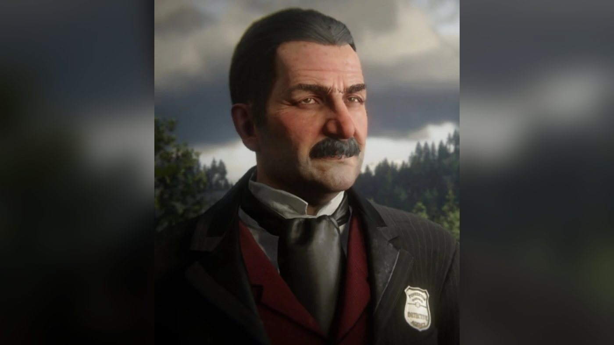
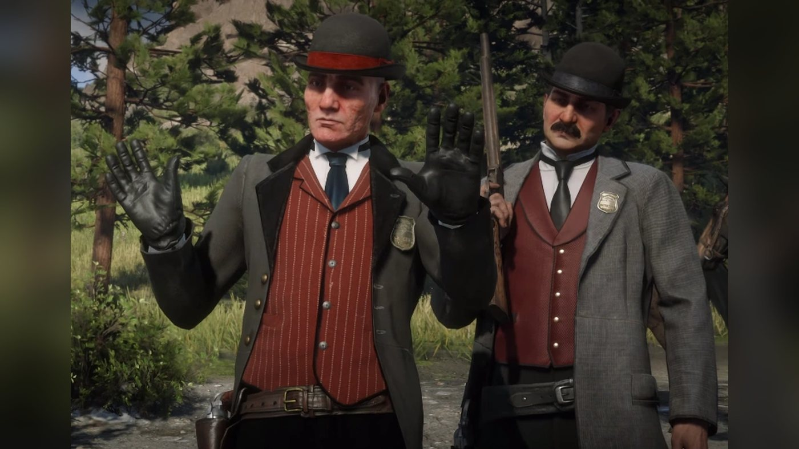
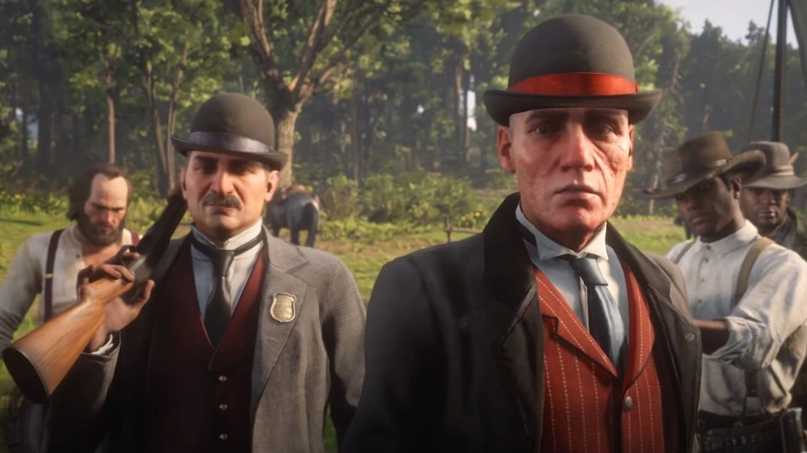
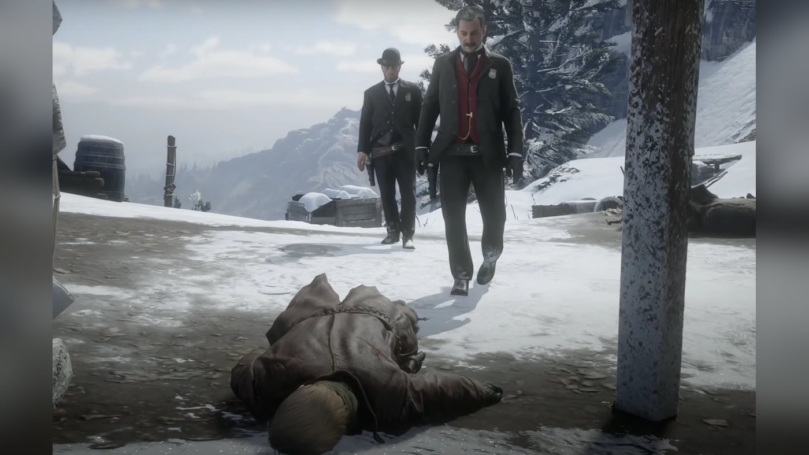
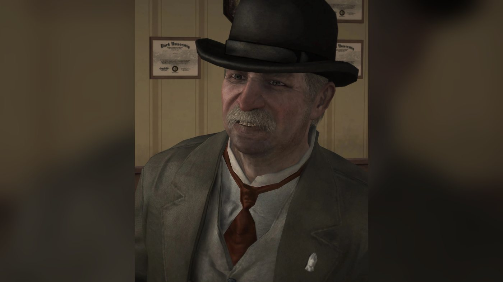
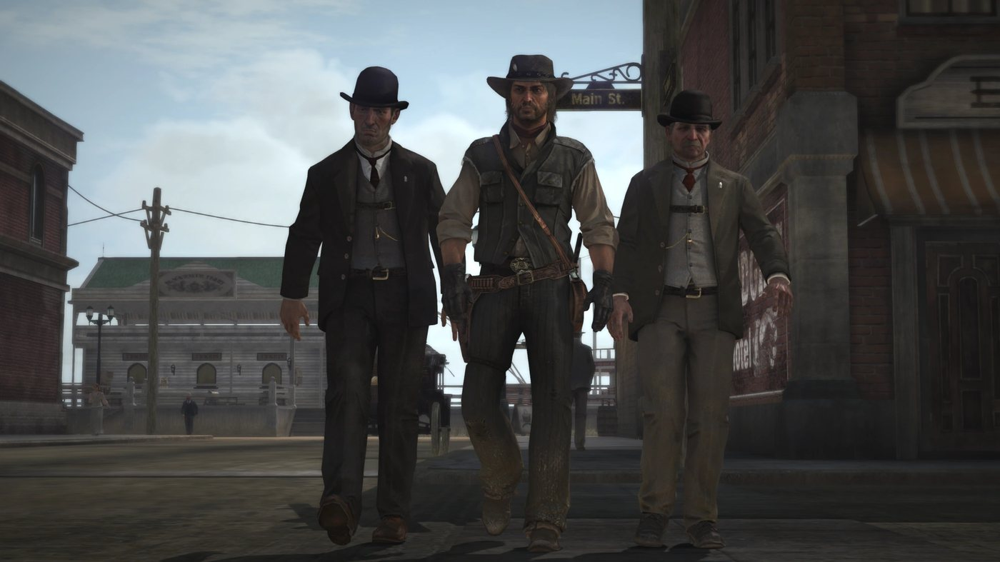
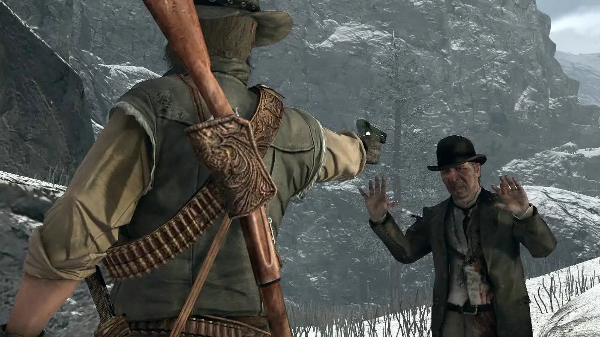
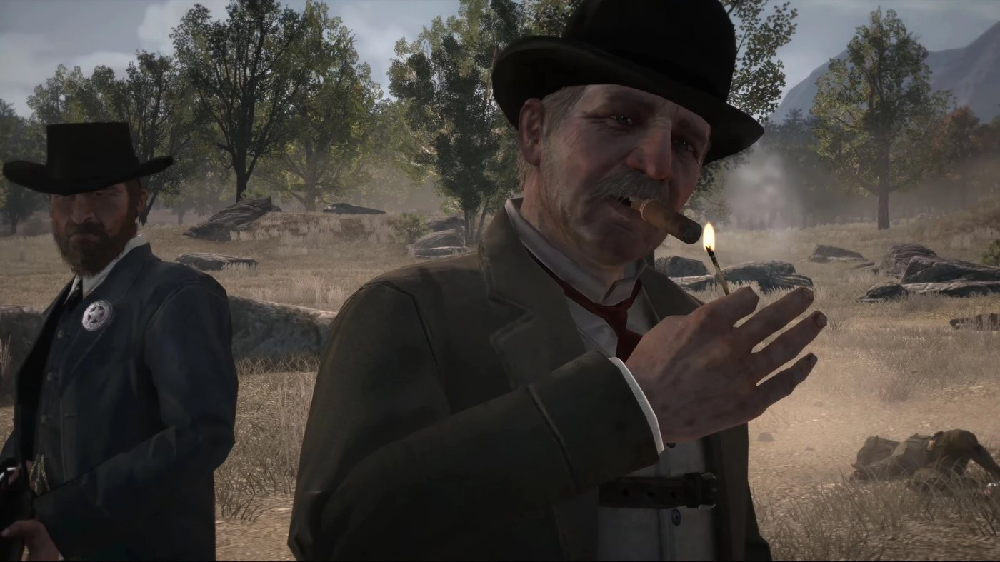
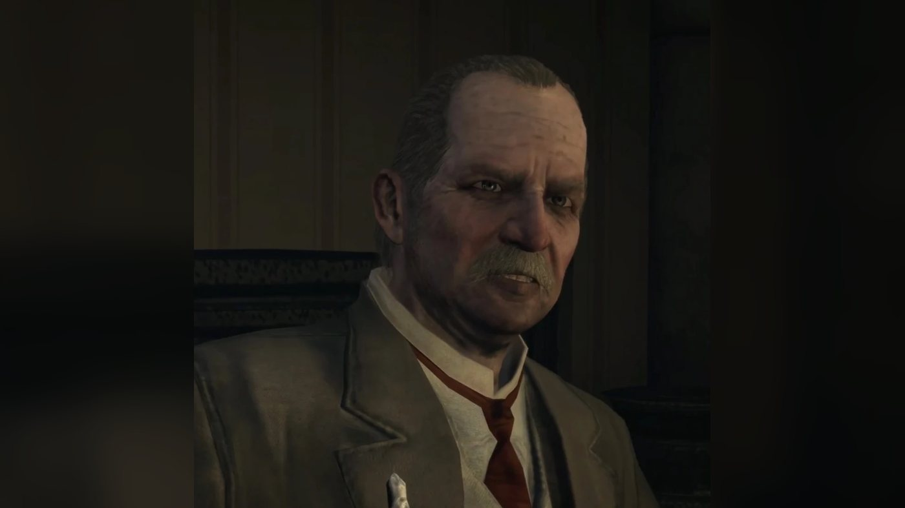
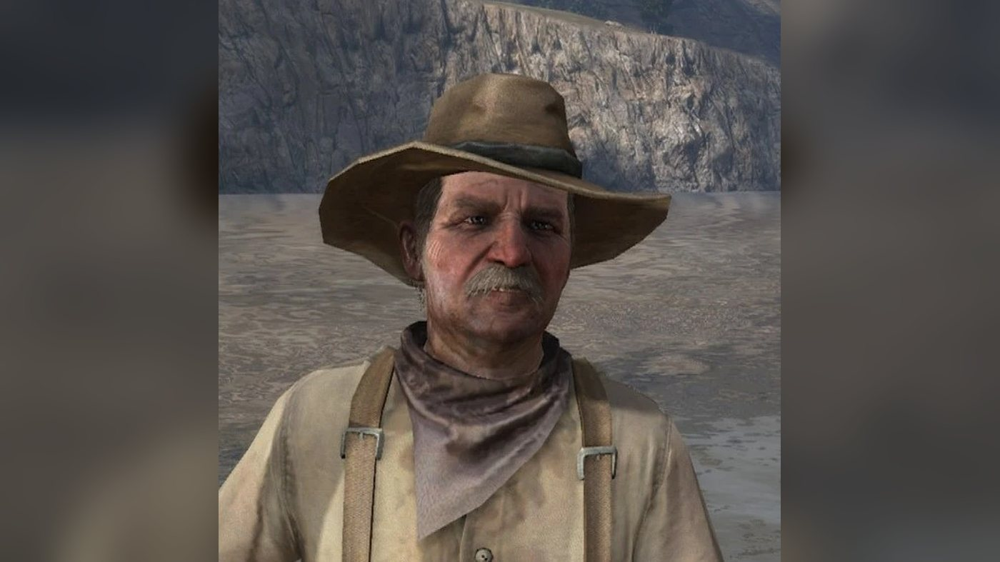
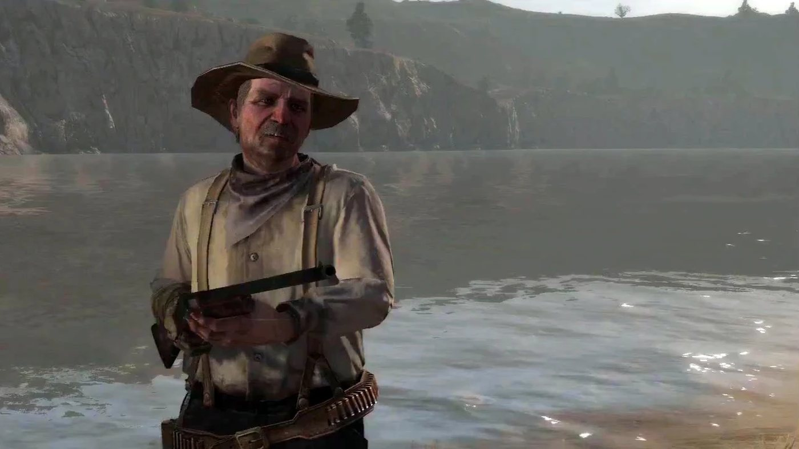